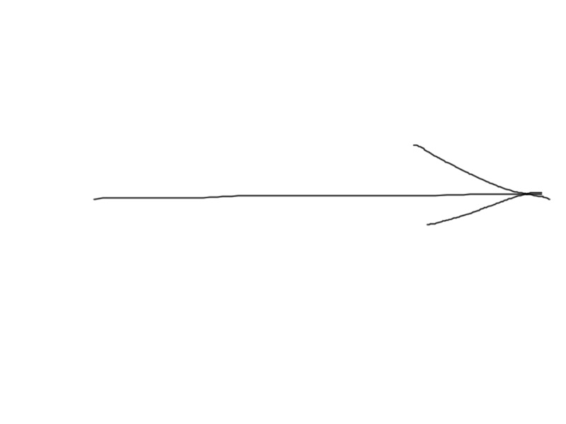

Среди читателей
Антона были и предприниматели.
Они периодически писали ему в личные сообщения с
просьбой выполнить тот или иной проект. Для Антона это было шоком.
Текст (от лат. textus — ткань; сплетение, сочетание) — зафиксированная на каком-либо материальном носителе человеческая мысль; в общем плане связная и полная последовательность символов. Существуют две основные трактовки понятия «текст»: имманентная (расширенная, философски нагруженная) и репрезентативная (более частная). Имманентный подход подразумевает отношение к тексту как к автономной реальности, нацеленность на выявление его внутренней структуры. Репрезентативный — рассмотрение текста как особой формы представления информации о внешней тексту действительности.
он просто не знал, поэтому некоторым отказал, убедив себя и
их в том, что еще не готов брать ответственность
за реальные заказы. А некоторых, особо настойчивых, попросил подождать несколько недель.он просто не знал,
поэтому некоторым отказал, убедив себя и их в том, что еще не готов брать ответственность за реальные заказы. А
некоторых, особо настойчивых, попросил подождать несколько недель.он просто
не знал, поэтому некоторым
отказал, убедив себя и их в том, что еще не готов брать ответственность за реальные заказы. А некоторых, особо
настойчивых, попросил подождать несколько недель.он просто не знал, поэтому некоторым отказал, убедив себя и их
в том, что еще не готов брать
ответственность за реальные заказы. А некоторых, особо
настойчивых, попросил подождать несколько недель.он просто не знал, поэтому некоторым отказал, убедив себя и их
в том, что еще не готов брать ответственность за реальные заказы. А некоторых, особо настойчивых, попросил
подождать несколько недель.он просто не знал, поэтому некоторым отказал, убедив себя и их в том, что еще не
готов брать ответственность за
реальные заказы. А некоторых, особо настойчивых, попросил подождать несколько
недель.он просто не знал, поэтому некоторым отказал, убедив себя и их в том, что еще не готов брать
ответственность за реальные заказы. А
некоторых, особо настойчивых, попросил подождать несколько недель.он
просто не знал, поэтому некоторым отказал, убедив себя и их в том, что еще не готов брать ответственность за
реальные заказы. А некоторых, особо настойчивых, попросил
подождать несколько недель.он
просто не знал, поэтому некоторым отказал, убедив себя и их в том, что еще не готов брать ответственность за
реальные заказы. А некоторых, особо настойчивых, попросил подождать несколько недель.он просто не знал, поэтому
некоторым отказал, убедив себя и их в том, что еще не готов брать ответственность за реальные заказы.
А некоторых, особо настойчивых, попросил подождать несколько недель.он просто не знал,
поэтому некоторым отказал, убедив себя и их в том, что еще не готов брать ответственность за реальные заказы. А
некоторых, особо настойчивых, попросил подождать несколько недель.он просто не знал, поэтому некоторым отказал,
убедив себя и их в том,
что еще не готов брать ответственность за реальные заказы. А
некоторых, особо настойчивых, попросил подождать несколько недель.он просто не знал, поэтому некоторым отказал,
убедив себя и их в том, что еще не готов брать ответственность за реальные заказы. А некоторых, особо
настойчивых, попросил подождать несколько недель.он просто не знал, поэтому
некоторым отказал, убедив
себя и их в том, что еще не готов брать ответственность за реальные заказы. А
некоторых, особо настойчивых,
попросил подождать несколько недель.он просто не знал, поэтому некоторым отказал, убедив себя и их в том, что
еще не готов брать ответственность за реальные заказы. А некоторых, особо настойчивых, попросил подождать
несколько недель.он просто не знал, поэтому некоторым отказал, убедив себя и их в том, что еще не готов брать
ответственность за реальные заказы. А некоторых, особо настойчивых, попросил подождать несколько недель.он
просто не знал, поэтому некоторым отказал, убедив себя и их в том,
что еще не готов брать
ответственность за реальные заказы. А некоторых, особо настойчивых, попросил подождать несколько недель.он
просто не знал, поэтому некоторым отказал, убедив себя и их в том, что еще не готов брать ответственность за
реальные заказы. А некоторых, особо
настойчивых, попросил подождать несколько недель.